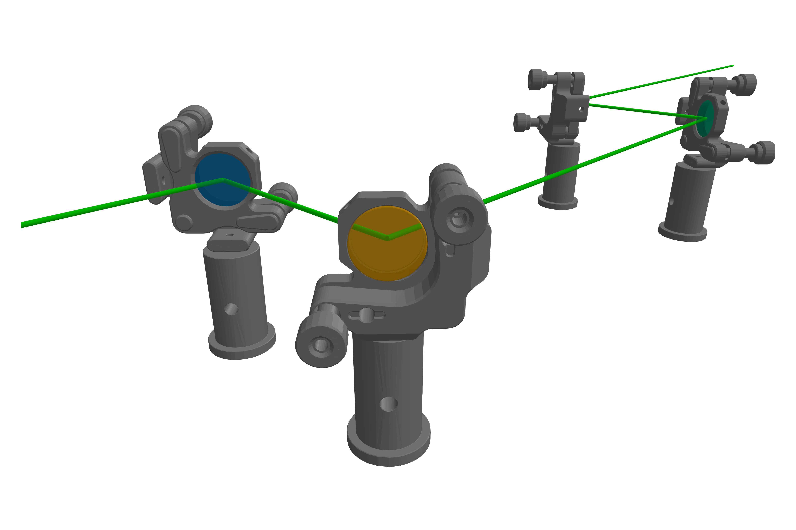
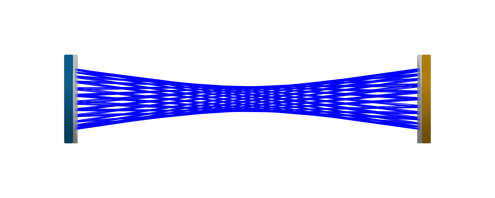

Mirrors
A common optical element with a straight-forward optical interaction. This kind of component is in general defined as a BeamletOptics.AbstractReflectiveOptic. For a basic Ray the interaction is simply defined by the BeamletOptics.reflection3d function. A more complex algorithm is required when when a PolarizedRay interacts with a reflecting surface. The polarization calculus that is performed is explained in the Polarized Rays section. Below, some of the concrete implemented mirror types are shown. In general, the Mirror is used as a concrete type to represent an arbitrary reflecting shape.
BeamletOptics.Mirror — TypeMirror{S <: AbstractShape} <: AbstractReflectiveOpticConcrete implementation of a perfect mirror (R = 1) with arbitrary shape.
It is important to consider that all surfaces of this mirror type are reflecting!
The following constructors can be used to generate flat reflecting shapes. Additional types are explained below.
Plano Mirrors
A category of mirrors with a flat reflecting surface. A round version of this mirror can be easily generated using the RoundPlanoMirror or RightAnglePrismMirror types:
BeamletOptics.RoundPlanoMirror — MethodRoundPlanoMirror(diameter, thickness)Returns a cylindrical, flat RoundPlanoMirror with perfect reflectivity based on:
Inputs
diameter: mirror diameter in [m]thickness: mirror substrate thickness in [m]
Below, a trivial example of a beam path propagating through a system of Ø1"-mirrors mounted in KM100CP/M kinematic mounts is shown (e.g. PF10-03-P01). Note that the mounts are modeled as NonInteractableObjects.

Concave Mirrors
The ConcaveSphericalMirror represents an ideal optical element with a spherical concave reflective surface, commonly used for non-dispersive focusing applications. Its geometry is modeled using a combination of a concave spherical surface and a plano substrate, represented internally by a BeamletOptics.UnionSDF (refer also to the SDF-based spherical lenses section).

The following constructor allows the spawning of concave spherical mirrors.
BeamletOptics.ConcaveSphericalMirror — MethodConcaveSphericalMirror(radius, thickness, diameter)Constructor for a spherical mirror with a concave reflecting surface. The component is aligned with the positive y-axis. See also ConcaveSphericalMirror.
Inputs
radius: the spherical surface radius of curvature in [m]thickness: substrate thickness in [m]diameter: mirror outer diameter in [m]